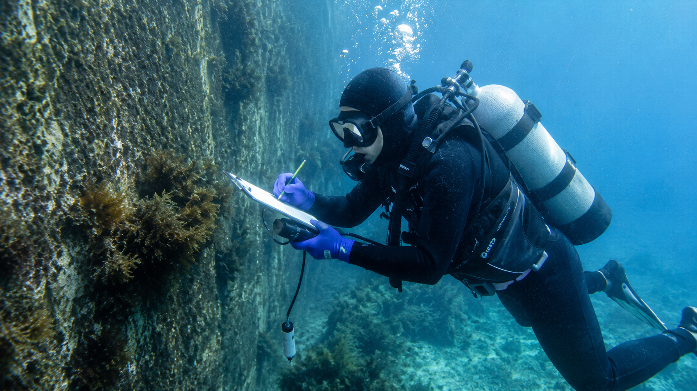

構造物調査
音響探査やROV（水中ドローン）を用いた水中構造物の精密点検・健全性調査を実施します。
詳しく見る →全国の漁港・港湾・河川・ダム等における豊富な調査実績の一部をご紹介します。
アセットマネジメント調査（福井・愛知・兵庫・福岡 他） / 横浜港・玄界島漁港等の被災状況調査
関空連絡橋点検 / 淀川大堰・広川ダム等の構造物調査 / 天満川樋門維持管理計画策定
九頭竜川・淀川橋梁健全度調査 / パイルベント橋脚現況調査（大阪市・鳥取県 他）
「共に感じ、共に解決できるパートナー意識」で高品質な成果をお約束します。
社内に7名の潜水技士が内在。陸上部と水中部を一括調査することで調査のブレや漏れを防ぎます。
濁水下でも鮮明な視界を確保する「クリアビュー」やADCP多層流向流速計等の先進設備を標準配備。
昭和63年の創業以来、水域環境と社会インフラの安全に貢献し続けるプロフェッショナル集団です。